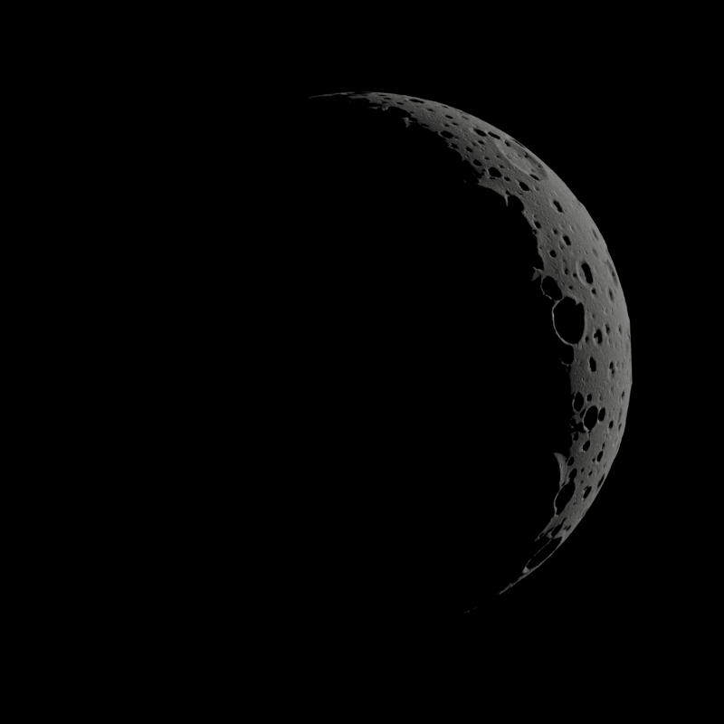
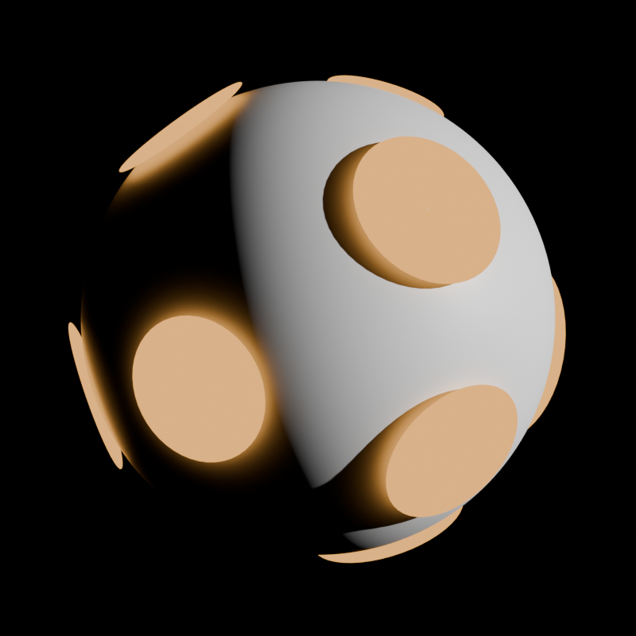
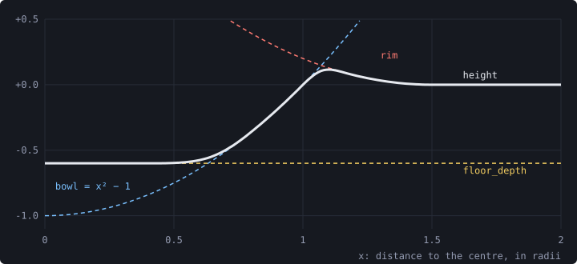
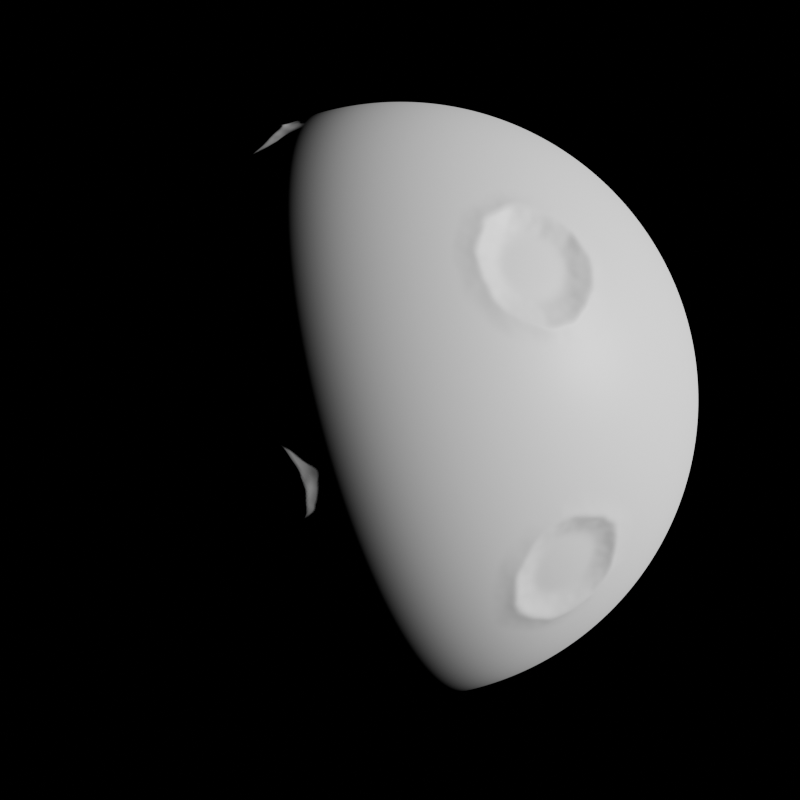
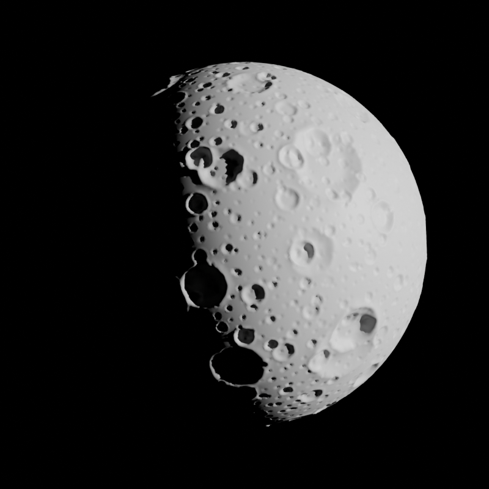
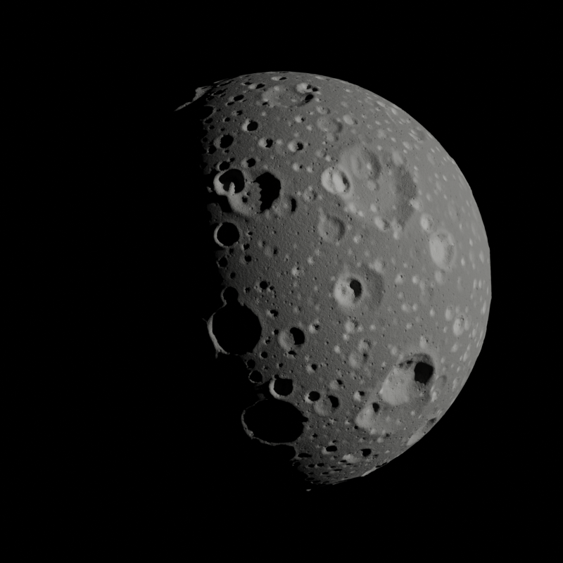
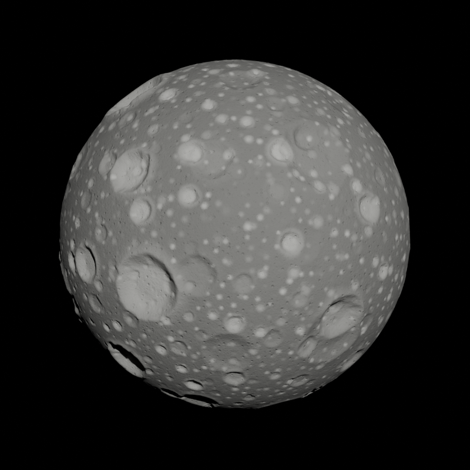
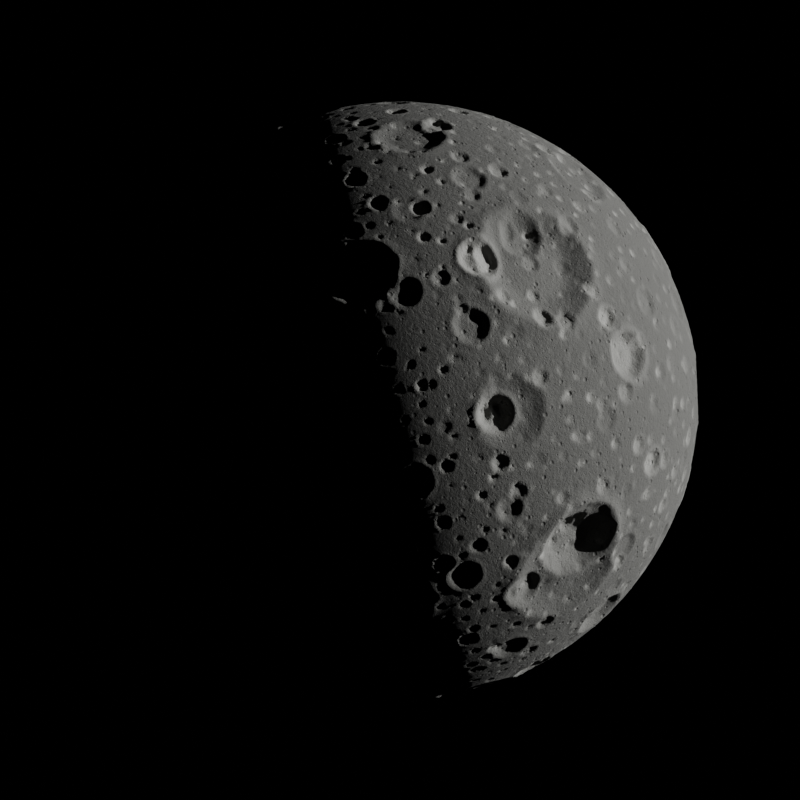

A moon two metres across, with about 3,400 craters, from 60 cm wide down to a few centimetres. The craters are scattered on the sphere and dug along its normals, each one measured in the plane of its own normal: the same graph would put them on any surface.

This tutorial stands on its own: everything it uses is explained here. It shares two pieces with Lunar ground, the shape of a crater and the dust material. That tutorial builds them more slowly, step by step, on a flat square, if you want to go further.
Every block below is a complete .bn file, its code beside the nodes it builds. You need Blender 5 and the Base Node add-on. Two ways to try a step:
mini_moon at the 3D cursor. A click on the file icon downloads the file instead.
The pictures are rendered from these exact files by render.py, under a sun 75° round the moon from the camera.
Craters must look the same everywhere on the moon, so the surface needs vertices spread evenly. A UV sphere does not have that: its rings of vertices crowd together at the poles.
An IcoSphere starts from an icosahedron, 20 equal triangles, and cuts every triangle in four at each subdivision. At 8 subdivisions it has 163,842 vertices, about 7 mm apart on a sphere of radius 1.
step1_sphere.bn: mini_moon
SetShadeSmooth hides the triangles.A quick way to scatter craters on a flat ground is a Voronoi texture: one crater per cell. On a curved surface, a Voronoi in 3D would cut its cells through the sphere at random depths, and give partial craters. Here we place the crater centres, the sites, on the surface itself, as points.
step2_sites.bn: crater_sites, mini_moon
DistributePointsOnFaces with distribute_method: POISSON scatters points at least distance_min apart. density_max is how many candidates it tries per square metre before it drops those too close: four per apart squared fills the surface.size. Two sites 3 × size apart can never have overlapping craters, so a crater never has to be cut or faded where it meets another.size and size, and an age. A point cloud has no normal of its own, so the one Distribute gives must be stored now, under a name.
To see them, this step's mini_moon draws each site as a disc of 1.5 radii, the ground its crater will cover. AlignRotationToVector turns each disc to the stored normal, and the scale gives it its size. Marker is a material that glows, so the discs show on the night side too.

Every vertex of the sphere now asks the sites which one is nearest, and takes its height from that crater alone. First, the shape that height follows.
Cut a crater through its centre and you get a curve: a bowl, often with a flat floor, and a raised rim that slopes down to the plain.
crater_profile describes this curve once, for a crater of radius 1, with x the distance from the centre counted in radii: x = 0 at the centre, x = 1 on the rim. Any crater is this curve, stretched to its radius.

crater_profile with its default inputs, and the three curves it is made of.x * x - 1.0: −1 at the centre, 0 at x = 1, above 0 further out.floor_depth (−0.6) cuts the bottom of the bowl flat.outside is x − 1.5, or 0 past x = 1.5. Its square, times rim_steepness, is 0.2 at x = 1 and 0 from x = 1.5 on.
The Math node's Smooth Maximum and Smooth Minimum round the creases where two curves meet, over a width of smoothness. Past 1.5 radii the height is exactly 0: that is what the three radii between sites of step 2 rely on.
step3_craters.bn: crater_profile
step3_craters.bn: crater_layer, mini_moon
SampleNearest gives its index. SampleIndex then reads, at that index, the site's position, its normal, its radius and its age. The values stored in step 2 are read back here by name.v goes from the centre to the vertex. Its part along the normal, n * (v ⋅ n), is how far the vertex lies below the plane the crater sits on. Taking it away leaves across, the distance measured in that plane. A crater measured this way stays round on any surface, even when the surface curves away under it.x is that distance in radii, bent by a noise between 1.0 and 1.3 so the rim is not a perfect circle. The factor never goes below 1: it only pulls the rim in, so no crater grows past its disc of step 2. The noise follows p / radius: its bumps scale with the crater, a few per rim. Then crater_profile gives the height, times the radius (a large crater is deeper) and depth; old craters, by their age, keep down to 30 % of it.SetPosition moves each vertex by Normal() * height: down into the bowl, up on the rim, always across the surface, never along a fixed axis.Between two sites, a vertex switches from one crater to the other where it is equally far from both. There it is 1.5 radii or more from each, outside both discs: both give a height of 0, or nearly, since the sphere curves a little between the discs, and the switch does not show.

A moon has a few large craters and a great many small ones, on top of the large ones. A repeat zone runs its body layers times and carries values from one run to the next: the height summed so far, and the size of the next layer, halved each time.
The sphere stays the same; each layer scatters its own sites on it, with its own seed (iteration), and adds its craters to the sum. Since a crater's depth follows its radius, the small ones are also shallower.
step4_layers.bn: mini_moon
| Layer | size | Crater radius | Sites |
|---|---|---|---|
| 1 | 0.3 | 15 to 30 cm | 9 |
| 2 | 0.15 | 7.5 to 15 cm | 38 |
| 3 | 0.075 | 3.8 to 7.5 cm | 155 |
| 4 | 0.0375 | 1.9 to 3.8 cm | 630 |
| 5 | 0.019 | 0.9 to 1.9 cm | 2,540 |
Each layer has about four times the sites of the one before: half the distance between them, on the same area. The last layer is at the limit of the sphere: a crater 9 mm in radius spans a vertex or two. A sixth layer would need a ninth subdivision, four times the vertices.

Try: set layers to 1, then to 3, to watch the moon fill. Set largest to 0.6: fewer, larger basins.
Two things are left for the material: the colour, and relief smaller than the vertices. It needs one value from the geometry.
Fresh craters on the Moon are brighter: the dust they threw out has not yet been darkened by the solar wind and micrometeorites. So crater_layer now also returns young, (1 − age)², full within half a radius of the centre and gone at 1.5 radii, and the repeat zone keeps the youngest crater of all layers with max.
step5_dust.bn: mini_moon
Look at the order at the end. A vertex moves along its normal, in all three axes: computed after the move, its nearest site and its distance to it would change, and young would no longer match the crater dug there.
So both values are computed on the sphere as it was and stored on its vertices first, under a name; SetPosition then reads the stored height by name.
It also computes the craters once: the stored value is read, the repeat zone does not run a second time.
step5_dust.bn: Regolith
shader(material: true) graph Regolith is the node tree of a material named Regolith; SetMaterial(material: Regolith) gives it to the moon.Attribute[attribute_name: "young"]() reads, at each point of the surface, the value stored on the vertices around it.TextureCoordinate().object: the noises are pinned to the object, in 3D. They need no UV map, so they work on the sphere, or on any mesh, as they are.patches, a large noise, makes darker and lighter areas. The grey is 0.07 to 0.15, up to 0.2 more around young craters: the Moon reflects about an eighth of the light it receives.relief sums a grain of noise and two layers of pits, all as heights in metres. Bump, at distance 1.0 and strength 1.0, reads them in those units and turns them into a normal: the sun lights each pit and grain as relief, and no vertex moves.roughness: 1.0: dust has no shine.step5_dust.bn: pits
pits is a crater for the shader: a Voronoi texture gives each point its distance to the centre of its cell, and the bowl alone, min(x * x - 1.0, 0.0), is dug in half of the cells. At 40 and 110 cells per metre, the pits are 4 to 9 mm, then 1.4 to 3.2 mm, in radius: smaller than the vertices, which are 7 mm apart.
A shader tree has no Compare node, so the comparison cell.color.y < 0.5 is a Math node there, Less Than, which gives the 1 or 0 that picks the cells. On the sphere, the 3D cells are cut by the surface at every depth, which makes the pits more varied still.

A moon lit by one sun and nothing else shows its phases as the sun goes round it. The same moon, three positions of the sun:


The sun is a Sun lamp of strength 6 and angle 0.5°, the world is black, and the render is Cycles, 96 samples, denoised. Without a world light, the night side is fully black.
The finished moon, in one file. Drag the card onto empty space in Blender's 3D Viewport and keep Instantiate the Example: a new object carries mini_moon. A click on the card downloads the file.
The steps before it, to start again from any of them:
The files, with the script that renders this page's pictures, are in examples/tutorials/mini_moon/.